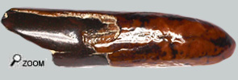
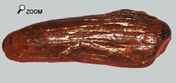
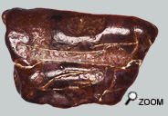
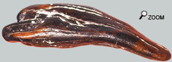
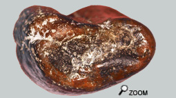

|
  |
||
 |
|
||
|
Chasseurs d'ivoire... Chez les gomphothères, le développement des incisives débute par des défenses de lait. Elles sont de très petites tailles (quelques cm) et surtout portent de l’émail enveloppant assez rugueux à leur extrémité. Après la chute de ces premières défenses déciduales, il apparaît des Au départ les défenses juvéniles ont aussi l’extrémité émaillée mais avec l’usure de la pointe et la poursuite de la croissance de la défense, le capuchon émaillé disparait. A l'âge adulte, il ne reste qu'une pointe d'ivoire sur les défenses inférieures. Pour les supérieures, il persiste une bande émaillée latérale. On notera que ces défenses montrent d'assez grandes variations individuelles. Au départ, l’incisive est de petite section et n’est pas très saillante. Défenses supérieures...  Au départ ces défenses juvéniles ont un capuchon émaillé comme le montre la photo de gauche, mais avec l’usure de cette extrémité et la poursuite de la croissance de la défense, la partie émaillée disparaît. Seules les défenses supérieures conservent une bande d’émail latérale.  Cette bande est irrégulière mais visible sur les extrémités de défense ci-dessus et ci-contre. Toutefois cette bande d'émail n'est pas tout le temps retrouvée sur l'intégralité de la longueur de la dent. En effet certains vieux adultes perdent l'aptitude de générer de l'émail avec l'âge. La bande d'émail n'est alors visible que sur la partie antérieure de la  Et il faut aussi parler de fossiles très improbables qui ne ressemblent pas à grand chose. Les variations sont telles qu'il est difficile de donner une description exhaustive de toutes les nuances autour du modèle de base. Par exemple le fossile ci-contre est probablement un germe de défense supérieure femelle de gomphotherium.
Défenses inférieures...
En section elles sont toujours plus ou moins pyriformes avec une dépression longitudinale en forme de canal peu profond sur sa face dorsale, comme la petite extrémité de défense ci-dessus le montre.   L'image ci-contre correspond la section d'une extrémité de défense inférieure.
Pour ceux que ça intéresse... 2 publications à lire absolument (très bien illustrées et passionnantes) : "The Proboscidea (Mammalia) from the Miocene of Sandelzhausen (Southern Germany)" Ursula Göhlich (2010). "L'odontologie de Gomphotherium angustidens (Cuvier,1817) (Proboscidea, Mammalia) : Données issues du gisement d'En Péjouan. (Miocène moyen du Gers, France)." Pascal Tassy, 2014 |
|||
 défenses définitives à croissance continue.
défenses définitives à croissance continue.